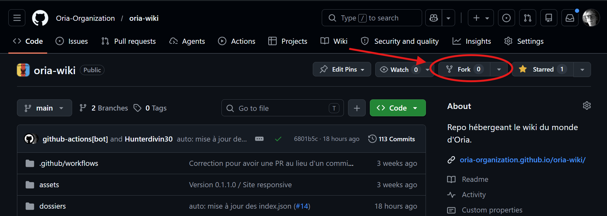
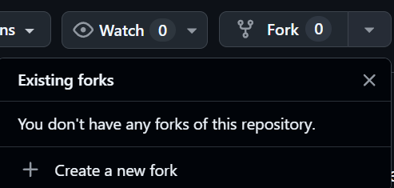
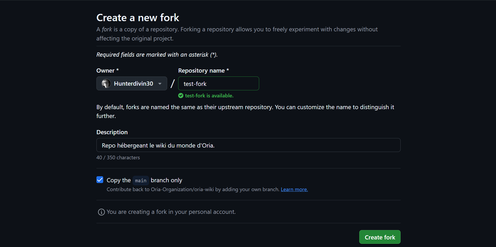
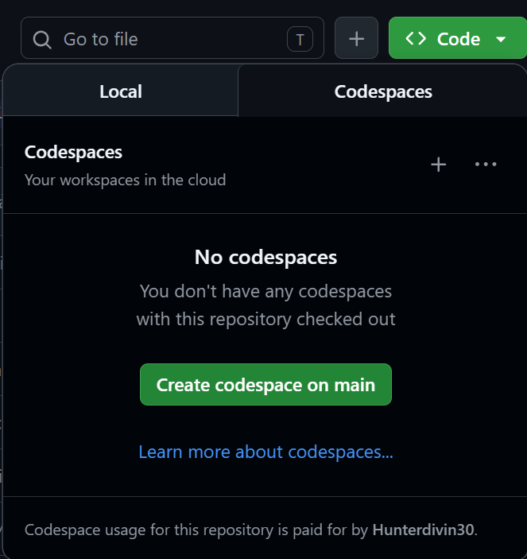
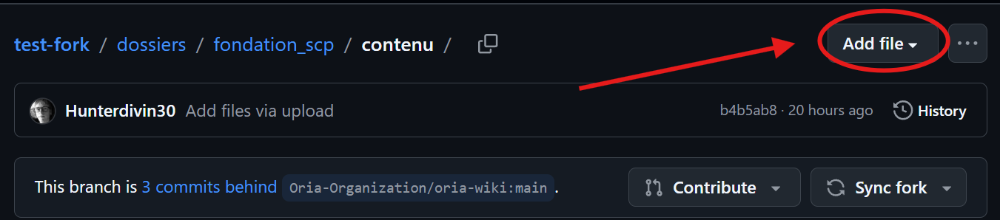
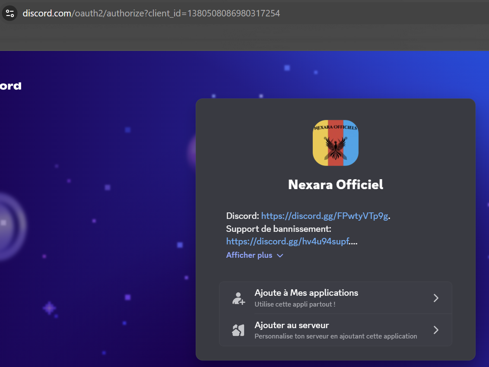
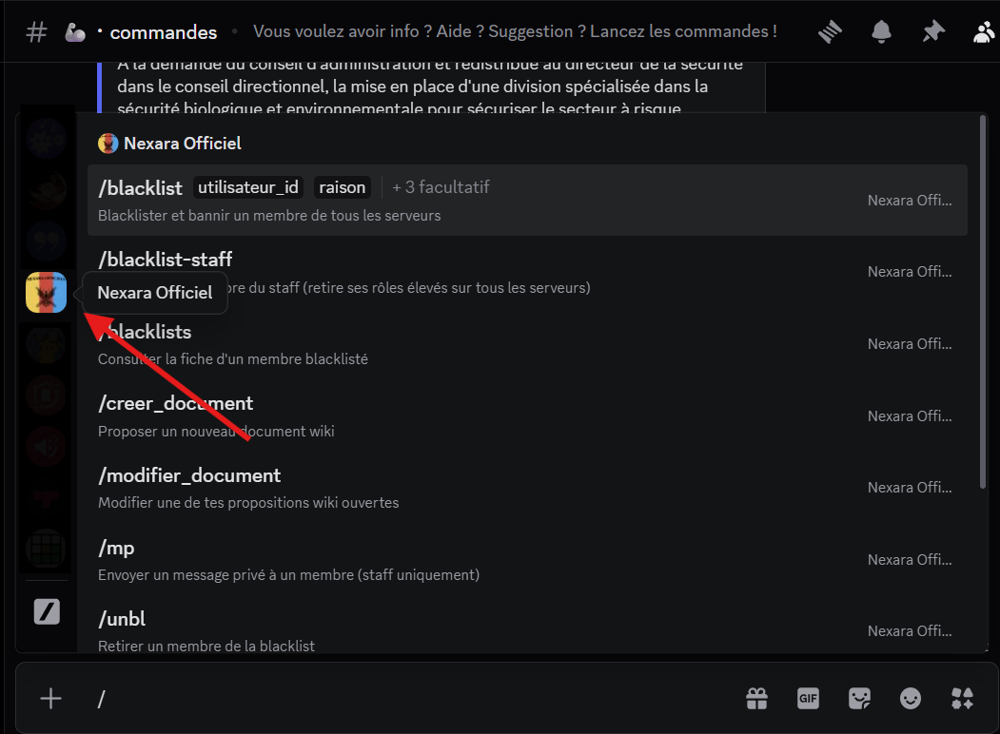
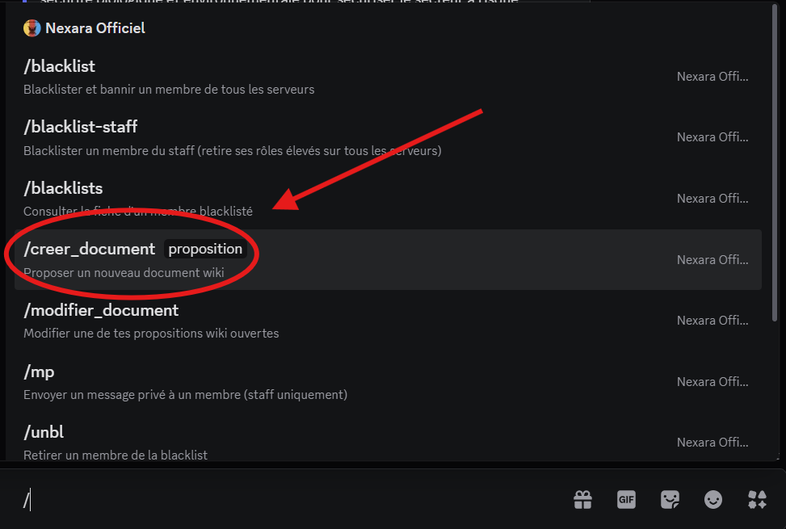
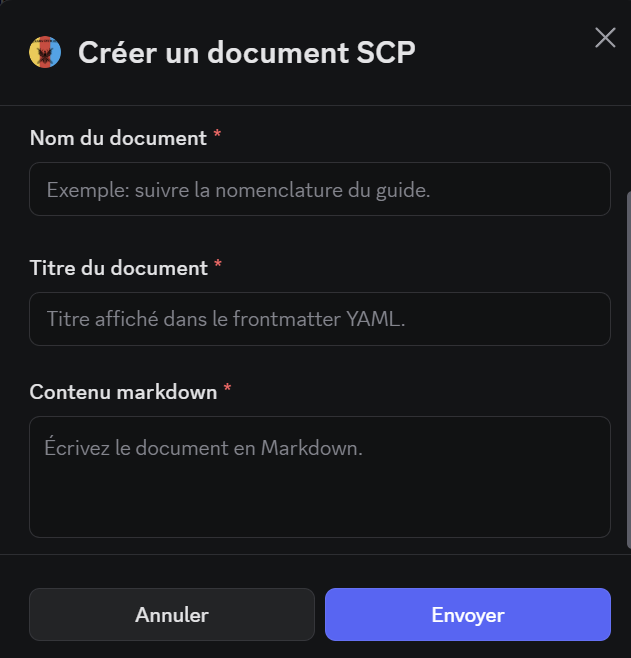
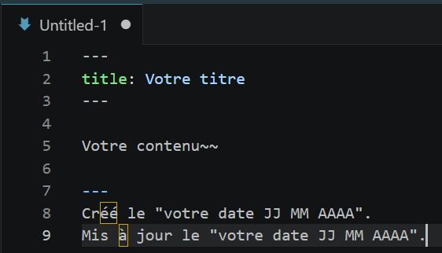

Guide de rédaction
Toutes les informations devront être prises en compte pour la création d'un document, sous la contrainte de voir son document refusé ou demandé à être amélioré.
Nous vous informerons toujours lorsqu'un document est refusé ou demandé à être amélioré avec les raisons qui y sont liées.
Depuis GitHub
1. Création de votre fork
Pour créer votre document, il vous suffit de vous rendre sur GitHub, via le lien https://github.com/Oria-Organization/oria-bot/ qui est notre repo. La création d'un compte est requise, voir (Documentation GitHub).
Par la suite, vous pourrez cliquer sur la flèche de "fork" (voir image 1), puis ensuite "Create a new fork" (voir image 2).


Vous vous retrouverez sur la page de l'image 1, il vous suffira donc de faire "Create fork".

Tout le contenu du repo est la propriété d'Oria Production concernant la structure, l'organisation et les éléments officiels du projet.
Toute modification du copyright, de la structure du site ou de sa redistribution sans autorisation est interdite, voir aussi Droit d'auteur.
Vous aurez enfin votre propre repo, ou plutôt un fork (vous pouvez le supprimer à tout moment via les settings puis General, section "Danger Zone").
2. Comment créer votre document
Pour créer un document, il faut créer un commit, un commit est une sauvegarde des modifications de votre repo.
Pour modifier le fork, il y a plusieurs façons.
- Créer votre codespace.
- (Recommandé) Créer un fichier séparément et le télécharger sur le repo. Cliquez sur un fichier puis "ADD file".


Le format du document sera expliqué dans le guide de rédaction.
Depuis Discord
Avec l'arrivée de la version 0.4 de notre bot, vous pouvez utiliser la commande /creer_document et /modifier_document.
1. Comment lancer la commande ?
Pour lancer une commande de notre bot, vous pouvez soit rejoindre notre Discord, soit installer le bot.

Par la suite, rendez-vous dans un salon auquel vous avez les permissions de "Utiliser les commandes des applications" et "Envoyer des messages".
Et faites comme sur les images ci-dessous.


Par la suite, lancez la commande et remplissez les champs demandés, pour le formulaire qui va s'ouvrir, pour le format et le remplir rendez-vous sur le guide de rédaction.
Guide de rédaction
Format du document
1. Sur Discord
Le format est libre dans le contenu, tout dépend du texte que vous voulez créer, nous pouvons, si ce n'est pas conforme au lore, proposer des améliorations ou refuser le document.
Sur le formulaire qui va s'ouvrir, vous pourrez voir le nom du document, cela correspond au nom du fichier qui va être créé "Document-XXX-XXX-XXX-etc.md", il faut donc mettre des majuscules et des acronymes (si le mot est trop long) qui seront placès entre "Document-NEX- (ou Document-SCP-)" et ".md", la nomenclature doit correspondre à celle-ci.
- Document-NEX-"Contenu" : Sujet
- Document-NEX-XXX-"Contenu" : Sous-sujet
- Document-NEX-XXX-XXX-"Contenu" : Numéro du sujet
- Document-NEX-XXX-XXX-XXX-"Contenu" : Sous-numéro du sujet
- Document-NEX-XXX-XXX-XXX-XXX-"Contenu" : Et encore...
Le titre correspond au nom du document quand il sera publié sur ce site, le nom du fichier n'apparaîtra jamais.
Le contenu correspond à ce que va contenir votre document en lien avec le lore et ce que vous aimeriez rajouter.

2. Sur GitHub
Le format est libre dans le contenu, tout dépend du texte que vous voulez créer, nous pouvons, si ce n'est pas conforme au lore, proposer des améliorations ou refuser le document.
Le nom de votre fichier devra contenir une nomenclature, elle correspondra à celle-ci :
- Document-NEX-"Contenu" : Sujet
- Document-NEX-XXX-"Contenu" : Sous-sujet
- Document-NEX-XXX-XXX-"Contenu" : Numéro du sujet
- Document-NEX-XXX-XXX-XXX-"Contenu" : Sous-numéro du sujet
- Document-NEX-XXX-XXX-XXX-XXX-"Contenu" : Et encore...
Au début de votre document, vous devrez placer un frontmatter YAML pour votre titre.
À la fin, votre document devra posséder la date de création (ou de mise à jour en plus de celle de création).

La rédaction
Pour créer le contenu pertinent de votre document, il faut prendre en compte cinq choses.
- Répondre aux 4 questions
- Orthographe soignée
- Avoir un lien avec le lore
- Ton respecté
- Le lien temporel respecté
Les 4 questions
Les questions peuvent recevoir une réponse sans être écrites dans le fichier. C'est-à-dire que l'auteur d'un document doit répondre aux 4 questions même si elles ne sont pas marquées dans le fichier.
Il peut bien évidemment répondre à ces questions directement dans son document.
- Quand se passe ce document ?
- Pourquoi ? Dans quel but ?
- Pour qui ?
- Par qui ?
Droit d'auteur
Le wiki, le repo ainsi que l'ensemble du contenu lié à l'univers d'Empire Nexara et aux projets d'Oria Production sont protégés par le droit d'auteur.
Toute contribution publiée sur le wiki, le repo ou via le bot Discord accorde à Oria Production un droit d'utilisation, de modification, d'archivage et de publication dans le cadre du projet et de ses plateformes associées.
Les auteurs conservent les droits sur leurs créations originales sauf mention contraire explicitement indiquée.
Toute contribution envoyée au projet est considérée comme autorisée à être publiée publiquement sur le wiki et les plateformes liées à Oria Production.
Les administrateurs peuvent refuser, modifier, retirer ou demander des corrections sur un contenu si celui-ci :
- ne respecte pas le lore ou l'univers du projet ;
- contient du contenu copié, plagié ou non autorisé ;
- nécessite des crédits ou autorisations non fournis ;
- ne respecte pas les règles du projet ou les conditions de publication.
Un auteur peut demander le retrait de son document. Toutefois, Oria Production se réserve le droit de conserver une archive interne du contenu pour des raisons de modération, d'historique ou de cohérence du projet.
Toute tentative de republication complète du wiki, de son apparence, de son organisation ou de son contenu officiel sans autorisation explicite d'Oria Production peut être refusée ou faire l'objet de demandes de retrait.